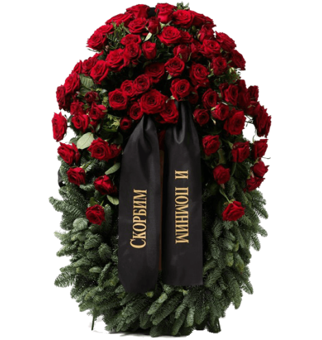

Ритуальные венки с доставкой
Ритуальные венки на похоронах выражают почтение памяти усопшего. Возложение венков и цветов на похоронах - древняя традиция, более древняя, чем христианство. Люди издавна считали, что укладывание венков на могилу, поможет облегчить тяжесть потери близким людям умершего.
Почтение памяти усопшего
Как почтить память ушедшего из жизни родственника, друга, близного человека? Как выразить свое горе и траур, которые овладели вами даже при одной мысли, что человека нет уже в живых? Для прощания с усопшим на похоронах, вам нужно прийти и положить букет цветов или принести корзину с цветами, или ритуальный венок. Они могут быть изготовлены, как из живых, так и из искусственных цветов, которые были одни из любимых цветов покойного или те, которые нравятся его родным. Во время окончания оформления композиций венки украсят похоронными лентами, на которых пишут прощальные слова от коллег и близких.

Заказ траурного венка
Для тех людей, которые хотят купить ритуальный венок, хороший вариант приобрести его в магазине ритуальной атрибутики бюро «ЭДЕМ». Здесь вы можете заказать траурные венки с доставкой.
Как купить венки с доставкой
Мы предлагаем доставку и оформление всех видов композиций по городу и области. Наше бюро понимает, на сколько тяжкая минута утраты близкого человека и мы предельно быстро решим проблему, связанную с цветами на похоронах.
Для того, чтобы заказать ритуальные венки , вам потребуется позвонить нашим специалистам и обсудить с ними все интересующие вас вопросы, в связи с тем, что наши венки имеют разнообразные формы. Консультант нашего бюро окажет вам помощь в консультационной поддержке касаясь того какой венок вам выбрать, по мимо этого подберет для вас цветовую гаму и ритуальную ленту.
Помимо ритуальных венков у нас можно купить разнообразные ритуальные атрибуты, которые понадобятся во время проведения похорон. По вашему желанию вы можете заказать в нашем бюро «ЭДЕМ» ритуального агента, при этом вы получите полный комплекс услуг и внимательный подход. Наше бюро поможет вам и сократит сроки оформления и доставки. Нам хочется хотя бы немного облегчить вашу утрату, взяв половину хлопот на себя. Обращайтесь к нам за помощью, и наш ритуальный агент сделает все быстро, качественно и надежно.